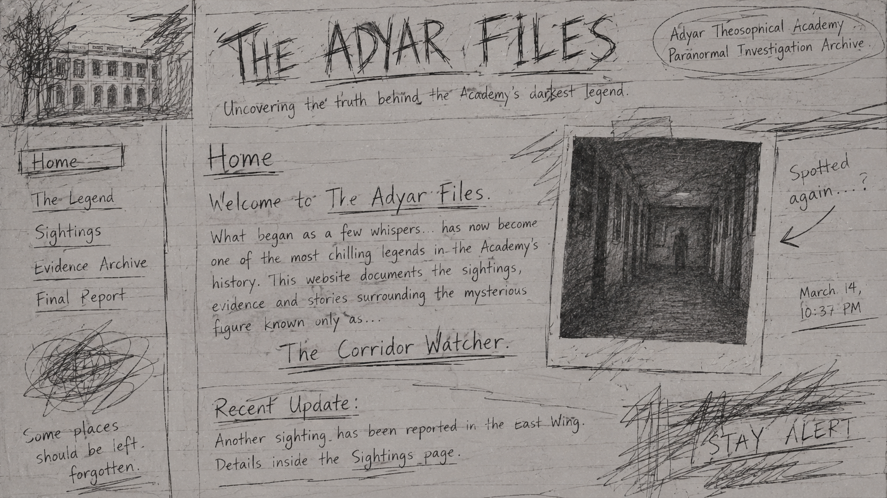

The Quiet Language of Trees
On the trees, their history and the silent life of a forest.
Read article →A collection of writings inspired by the history, natural surroundings and quiet atmosphere of Adyar.

On the trees, their history and the silent life of a forest.
Read article →
A look at the beginnings of an international movement.
Read article →
Observations from a walk through the natural surroundings.
Read article →
Questions about knowledge, wisdom and the human experience.
Read article →
Exploring the relationship between a place and its environment.
Read article →This journal is an independent collection of observations, essays and historical notes inspired by Adyar. Its purpose is to explore the relationship between nature, history and human thought.
Written and compiled by Anonymous.

There are places where silence is not an absence of sound, but a presence of something else. A forest is one such place.
Trees have occupied an important place in human history for thousands of years. They have provided shelter, food, medicine and materials for the construction of homes. Yet their importance extends far beyond their practical uses. Across different cultures, trees have been symbols of knowledge, endurance, renewal and life itself.
A tree is a remarkable record of time. Its rings preserve evidence of the years through which it has grown. Changes in rainfall, temperature and surrounding conditions can influence its development. Although a tree cannot speak, its structure carries a history that can be studied and understood.
The relationship between trees is also more complicated than it might first appear. Their roots interact with the soil, while fungi and microorganisms help form networks that influence the movement of nutrients. These relationships are part of a larger ecosystem in which plants, animals and microscopic organisms depend upon one another.
To observe a tree is to observe a living record of time.
In a busy world, it is easy to pass through a green space without noticing much beyond its appearance. However, spending time observing the details can change the experience. The arrangement of branches, the movement of leaves and the changing patterns of light reveal a natural environment that is constantly active.
Trees also remind us that growth does not always happen quickly. A large tree may have taken decades to reach its present form. Its development is shaped by countless ordinary days, changing seasons and periods of difficulty.
Perhaps this is why old trees often become landmarks. They connect generations of people to the same physical place. A person who stands beneath a tree today may be standing beneath branches that were already growing before they were born.
The language of trees is not one of words. It is found in their growth, their relationships and their ability to remain part of a changing landscape. Learning to notice these details is one way of developing a deeper appreciation for the natural world.

The history of the Theosophical Society is connected to a period of growing interest in philosophy, religion and the comparative study of different traditions.
The Theosophical Society was founded in New York City in 1875. Among its principal founders were Helena Petrovna Blavatsky, Henry Steel Olcott and William Quan Judge. The organisation developed around an interest in exploring the deeper questions of human existence and the relationship between different religious and philosophical traditions.
The word "theosophy" is commonly associated with the idea of divine wisdom. The Society encouraged the study of religions, philosophies and sciences, while also promoting the investigation of questions that were not easily answered through ordinary observation.
One of the Society's important objectives was to form a nucleus of universal brotherhood without distinctions of race, creed, sex, caste or colour. Another was to encourage the comparative study of religion, philosophy and science. It also expressed an interest in investigating unexplained laws of nature and the powers latent in humanity.
In 1879, Blavatsky and Olcott moved to India. Their arrival marked an important stage in the development of the Society. The organisation gradually established connections with Indian intellectuals and became involved in discussions surrounding religion, education and cultural identity.
An interest in different traditions can become a starting point for understanding.
In 1882, the Society established its international headquarters at Adyar, in Chennai. The location became closely associated with its work and its history. Over time, the Adyar estate developed into a centre for meetings, study and international exchange.
The Society's presence in India coincided with a period of renewed interest in Indian philosophical and religious traditions. Its members and visitors came from different countries and backgrounds, creating opportunities for discussions that crossed cultural boundaries.
The history of the organisation has not been without debate or criticism. Its ideas, leadership and activities have been interpreted in different ways by historians and observers. Like many long-running institutions, it has changed over time.
Today, the Theosophical Society continues to be associated with the study of philosophy, religion and the search for understanding. Its history offers an example of how ideas can travel across countries and influence conversations between cultures.

A walk through a familiar place can reveal details that remain unnoticed when one is in a hurry.
The Adyar surroundings are often associated with greenery, old trees and an atmosphere that feels different from the busy streets outside. The landscape offers an opportunity to observe how natural spaces exist alongside the development of a city.
The first thing one notices in such an environment is often the change in sound. Traffic becomes less prominent, while birds, insects and the movement of leaves become easier to hear. The experience is not necessarily silent, but the sounds seem to belong to a different rhythm.
Walking beneath large trees also changes the way one experiences light. Sunlight passes through branches and leaves, creating constantly changing patterns on the ground. The same path may look completely different at different times of the day.
A closer look at the surroundings reveals smaller details. Fallen leaves gather near tree roots. Plants grow in spaces between larger structures. Birds move between branches, while insects occupy places that are rarely noticed by visitors.
Sometimes the most interesting part of a journey is what one notices along the way.
Natural spaces also have an important environmental role. Trees provide shade, support wildlife and contribute to the local environment. Their presence can influence temperature and help maintain habitats for different species.
A walk through a historic or natural setting can also encourage reflection on the passage of time. Buildings may change, paths may be repaired and the surrounding city may expand. Yet some trees and landscape features remain for generations.
It is worth remembering that these grounds are not simply scenery. They are living environments that require care and attention. Respecting them means avoiding litter, disturbing wildlife or damaging plants.
At the end of a walk, the place may appear much the same as it did at the beginning. The difference is often in the observer. A little more attention can turn an ordinary walk into an opportunity to understand the surroundings more deeply.

The questions that occupy human beings today are, in many ways, the same questions that occupied people centuries ago.
What makes a good life? What is knowledge? How should human beings treat one another? What is the relationship between the individual and the wider world? These questions appear in philosophical traditions across different parts of the world.
Ancient Indian philosophy, for example, contains a wide range of schools of thought. The Upanishads explore questions about the self, consciousness and the nature of reality. Other traditions, including Buddhist and Jain philosophy, developed their own approaches to questions of existence, ethics and knowledge.
Greek thinkers also examined the foundations of knowledge and the nature of a meaningful life. Philosophers such as Socrates, Plato and Aristotle developed arguments and methods of inquiry that continue to be discussed in modern education.
Studying these traditions does not mean accepting every idea simply because it is old. Historical ideas need to be examined in their original context and considered critically. Some remain influential, while others are challenged by newer evidence and ways of thinking.
The value of an old idea lies not only in its age, but in the questions it helps us ask.
One of the most interesting aspects of comparative philosophy is the discovery that different cultures sometimes arrive at similar questions through very different approaches. This does not mean that all traditions are identical. Rather, it shows how widely shared human experiences can lead to different forms of reflection.
The study of ancient thought can also help people understand the history of modern ideas. Concepts about ethics, society, education and the natural world have developed through long conversations between generations of thinkers.
Reading philosophical texts requires patience. Their language may be unfamiliar, and their arguments can be difficult to understand without historical background. Discussing them, comparing interpretations and asking questions can make the process more meaningful.
Ancient philosophy is not simply a collection of ideas preserved in old books. It is part of an ongoing conversation about how human beings understand themselves and the world around them.

A city is usually remembered for its buildings, roads and people. Yet its natural spaces are just as important to the character of the place.
Adyar is an interesting part of Chennai because its identity is connected not only to urban development but also to its natural surroundings. The river, nearby coastal environments and areas of vegetation contribute to a landscape that has changed over time.
The Adyar River is an important geographical feature of the area. Like many urban rivers, it has faced environmental pressures associated with pollution, development and changes in land use. Its condition is connected to the wider environmental health of the city.
The Adyar region is also associated with the Adyar Estuary and the Theosophical Society's green grounds. Coastal and river ecosystems support different forms of life. Birds, fish, insects and plants depend upon suitable habitats and the availability of food and water.
Urban green spaces are valuable for several reasons. Trees provide shade and help reduce local heat. Vegetation can support biodiversity, while natural areas offer places for people to observe wildlife and spend time outdoors.
A healthy city needs more than buildings. It needs living spaces.
However, these environments are not protected simply because they exist. Pollution, waste disposal, construction and the removal of vegetation can affect ecosystems. Protecting natural spaces requires careful planning and consistent public responsibility.
People can contribute through ordinary actions. Avoiding litter, respecting wildlife, reducing unnecessary waste and supporting the protection of green spaces are small but meaningful steps. Larger improvements also depend on public awareness, responsible planning and environmental management.
The natural life of Adyar is part of a much wider story about how cities and ecosystems interact. It reminds us that urban environments are not separate from nature. They are part of it.
Understanding this relationship is important for the future. A city that values its natural surroundings is better placed to protect its biodiversity and create a healthier environment for the people who live there.
An independent journal exploring nature, history, philosophy and the surroundings of Adyar.
Notes from Adyar is a student-created online journal. It brings together short essays and observations inspired by the natural environment and history of Adyar, Chennai.
The publication is written under the name Anonymous. The intention is to create a quiet space for reading, observation and curiosity.
The articles are independent writings and are not official publications or statements of any organisation.
Editorial note: This is an independent student-made journal and is not affiliated with, endorsed by, or an official publication of the Theosophical Society.
There are stories that are told openly, and there are stories that seem to survive only because somebody remembers them.
Among the less familiar stories associated with the old buildings of Adyar is an account of a figure said to have been noticed in the corridors after the grounds had become quiet.

The descriptions are inconsistent. Some accounts mention a figure at the far end of a passage. Others describe the impression of someone having just passed around a corner.
There is no reliable historical evidence establishing that such a figure existed. The story should therefore be understood as an urban legend rather than a documented event.
Still, the details of the tale are interesting. The figure is rarely described clearly. It is usually remembered as a brief observation, something noticed for a moment and then lost in the ordinary appearance of the building.
The corridor was empty when they looked again.
The most repeated part of the account concerns the silence. No clear footsteps, no conversation and no explanation. Only the impression that someone had been there.
Perhaps the story developed from an ordinary misunderstanding, or perhaps it changed with every retelling. Urban legends often grow in precisely this way, with each person adding a small detail to something they cannot fully explain.
No conclusion can be drawn from the account. It remains an unverified local legend, preserved here as a piece of fictional folklore.
End of unlisted record · File status: Unverified